> HELP "Z80BENCH"
Z80 Bench documentation
How to use the bench, panel by panel, and what the emulated Z80 does at its pins. The numbers in each list match the numbered markers on the screenshot above it.
User guide
Quick start
The bench opens with a short sample program already assembled and loaded at 0000h. To see it work:
- Press Step instruction (or the S key) a few times. The highlighted line in the disassembly moves, the registers that changed turn orange, and the bus timing panel draws the instruction that just ran.
- Press Clock 1 T-state (C) to go one clock at a time and watch the address bus, data bus and control pins change on the pinout.
- Press Run (R) to let it go, and again to stop. The sample counts on output port
01h, so the LEDs in the I/O ports panel count up. - Edit the source in the Program panel and press Assemble and load to run your own code.
The keyboard shortcuts work whenever you are not typing in a field.
The screen
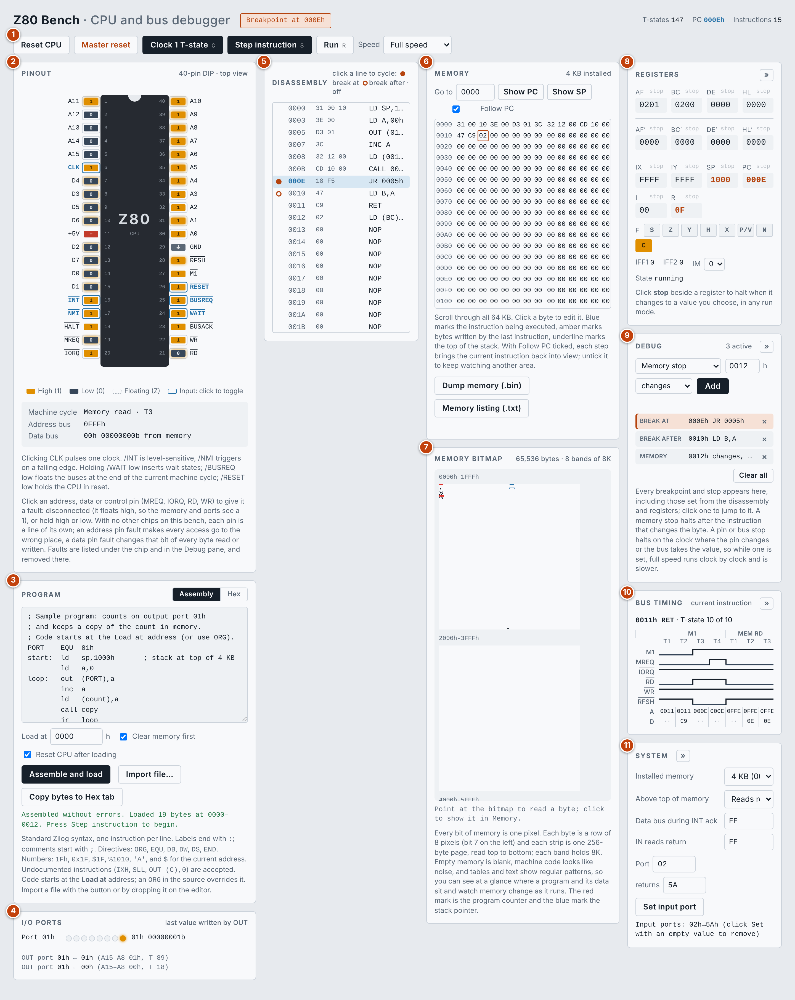
- Toolbar: reset, clock, step and run controls, with the status message beside the title and the T-state, PC and instruction counters at the top right.
- Pinout: the 40 pins of the Z80, live.
- Program: the assembler and hex editor, and the loader.
- I/O ports: what the program has written with OUT.
- Disassembly: memory shown as instructions; breakpoints are set here.
- Memory: the hex view of all 64 KB.
- Memory bitmap: all of memory as a picture, one pixel per bit.
- Registers: every register and flag, editable.
- Debug: the list of every breakpoint and stop.
- Bus timing: waveforms for the current instruction.
- System: installed memory, interrupt and input port settings.
On a narrow screen the columns stack one under another. The Registers, Debug, Bus timing and System panels each have a » button that folds the panel away to give Memory and Disassembly more room.
Running and stepping
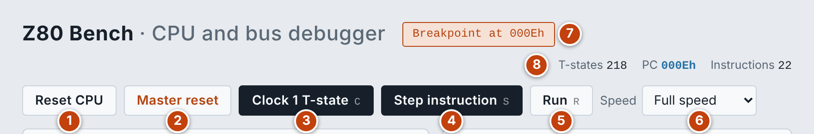
- Reset CPU: restarts the processor at
0000h. Memory, breakpoints and stops are kept. - Master reset: clears all 64K of memory, removes every breakpoint and stop, returns the input pins to their normal level and resets the CPU. Your source in the editor is kept. It asks for a second click to confirm.
- Clock 1 T-state (C): advances one clock period. This is the finest step: use it to follow a machine cycle on the pins.
- Step instruction (S): runs to the end of the current instruction.
- Run (R): runs until you press it again or a breakpoint or stop halts it.
- Speed: the clock rate used by Run: 5 Hz, 50 Hz, 1 kHz, 5 kHz, 10 kHz or full speed. The slow rates let you watch the pins and LEDs change.
- Status: what just happened: a load, a reset, or the breakpoint or stop that halted the run.
- Counters: T-states and instructions executed since the last reset, and the program counter.
Loading a program
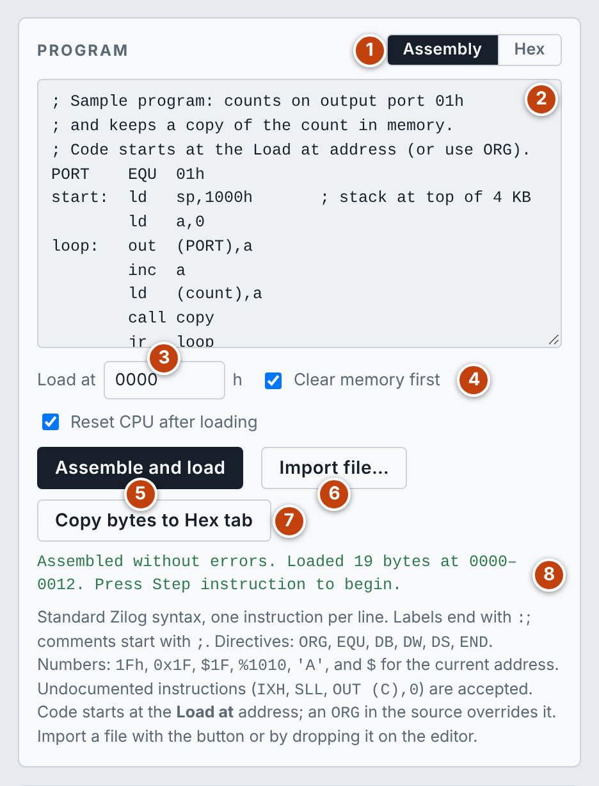
- Assembly or Hex: choose how you enter the program. Each tab keeps its own text.
- Editor: type or paste here, or drop a file on it.
- Load at: the address where the code goes, for example the start of ROM in your memory map. In Assembly it applies until the first
ORG; Intel HEX keeps its own addresses. - Clear memory first and Reset CPU after loading: untick the first to load several pieces into memory one after another; untick the second to patch memory without restarting the program.
- Assemble and load: assembles (or reads the hex) and writes the bytes into memory.
- Import file…:
.asm,.z80and.sfiles open in Assembly;.hex,.ihxand plain hex text open in Hex; raw.binand.romimages are converted to hex. - Copy bytes to Hex tab: turns the assembled code into an annotated hex listing.
- Result: how many bytes were loaded and where, or what went wrong.
Assembly uses standard Zilog syntax, one instruction per line. Labels end with : and comments start with ;.
| Item | Accepted |
|---|---|
| Directives | ORG, EQU, DB, DW, DS, END |
| Numbers | 1Fh, 0x1F, $1F, %1010, 'A', and $ for the current address; expressions are allowed |
| Undocumented instructions | IXH, IXL, IYH, IYL, SLL, OUT (C),0 and the rest |
Hex takes bytes separated by spaces or new lines. Text after ; is ignored, and a line such as 0100: continues loading at that address. Intel HEX (lines starting with :) is also accepted.
When you load hex or a ROM image, the disassembly turns it into labelled source that you can edit and assemble again.
Pinout
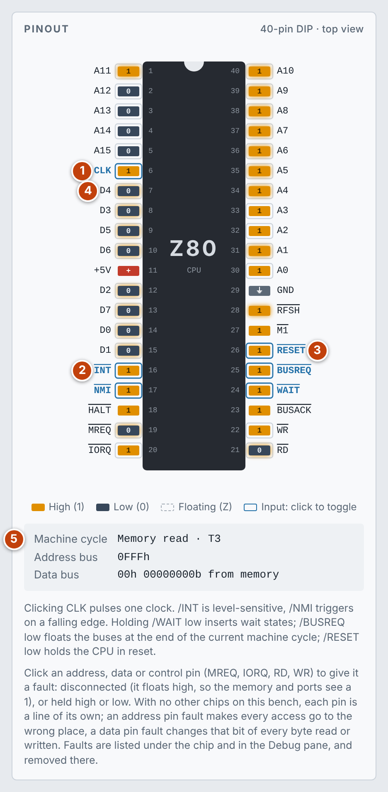
Every pin shows its level on each T-state: amber for high, dark for low and a dashed outline when the pin is floating. The pins outlined in blue are inputs that you drive by clicking them.
- CLK: click to pulse one clock, the same as Clock 1 T-state.
- /INT and /NMI: click /INT to hold the interrupt request low (it is level-sensitive, and honours EI, DI and the interrupt mode). Click /NMI to make a falling edge, which is what triggers it.
- /RESET, /BUSREQ and /WAIT: /RESET low holds the CPU in reset; releasing it restarts at
0000h. /BUSREQ low floats the buses at the end of the current machine cycle and asserts /BUSACK. /WAIT low inserts wait states for as long as it is held. - Data bus pins: these float except while a read or write is in progress, so you can see exactly when the bus is driven.
- Bus readout: the machine cycle and T-state the CPU is in, the address on the bus, and the data bus value in hex and binary with where it came from.
Pin faults: the address and data pins and MREQ, IORQ, RD and WR are ringed in grey. Click one to disconnect it (it floats high, so the memory and ports see a 1 there) or hold it high or low (the control pins offer Disconnected and High: low is their normal active level). With no other chips on the bench, each pin is a line of its own. An address pin fault sends every access to the wrong place; a data pin fault changes that bit of every byte read or written; MREQ, IORQ, RD or WR held high stops those cycles. A faulty pin is drawn with a dashed red ring, and the faults are listed under the chip and in the Debug pane, where each can be removed. The emulated machines (MSX, PET, Osborne, ZX81, CPC) go further: there the processor's pins share lines with the other chips on the board.
Disassembly and breakpoints
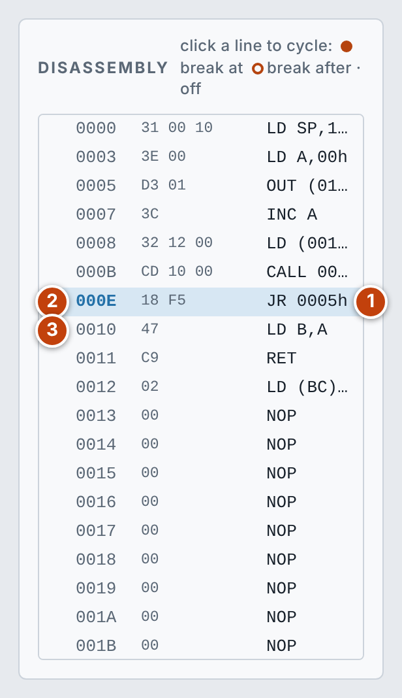
The list scrolls through all of memory and keeps the current instruction in view as you step. Click a line to cycle through its three states: break at, break after, off.
- Current instruction: the highlighted line is where the program counter is.
- Break at (filled dot): the run stops before this instruction executes.
- Break after (ring): the run stops when the PC leaves this address. Use it on an instruction that repeats in place, such as
LDIRor a jump to itself, so that it runs to completion first.
Memory and the memory bitmap
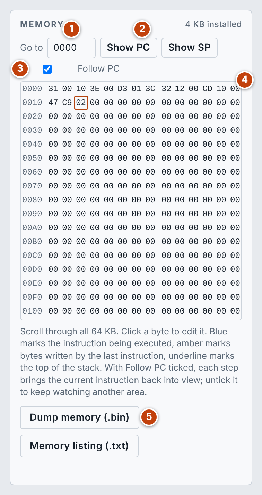
- Go to: type a hex address to jump there.
- Show PC and Show SP: jump to the program counter or the stack pointer.
- Follow PC: when ticked, each step brings the current instruction back into view. Untick it to keep watching another area while the program runs.
- Hex view: click any byte to edit it. Blue marks the instruction being executed, amber marks bytes written by the last instruction, and an underline marks the top of the stack.
- Dump memory (.bin) and Memory listing (.txt): save all 64K as a raw image (byte 0 is address
0000h) or as a hex listing.
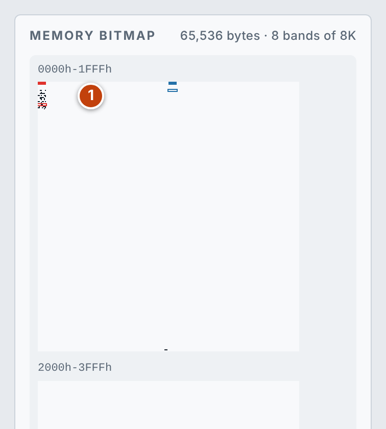
The bitmap draws every bit of memory as one pixel. Each byte is a row of 8 pixels with bit 7 on the left, each strip is one 256-byte page read top to bottom, and each band holds 8K. Empty memory is blank, machine code looks like noise, and tables and text show regular patterns, so you can see where a program and its data sit and watch memory change as it runs.
- Bands: the red mark is the program counter and the blue mark is the stack pointer.
- Readout: point at the bitmap to read the byte under the pointer; click to show that address in the Memory panel.
Registers and register stops
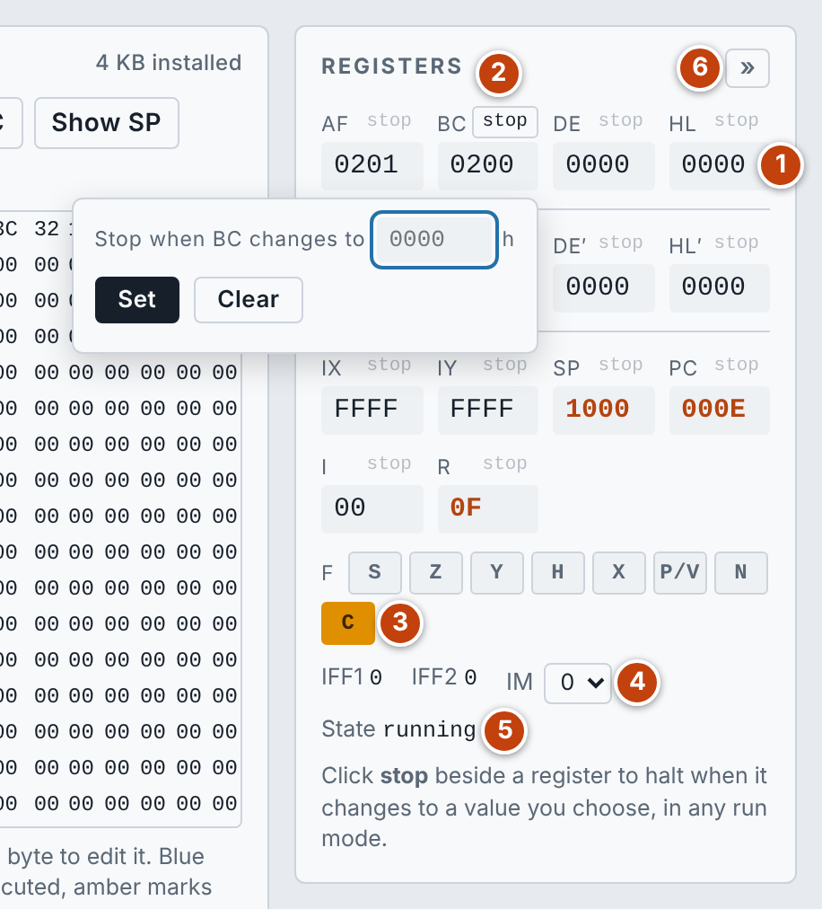
- Register values: all in hex. Click a value to edit it. Values that changed in the last step are shown in orange.
- stop: click it beside any register and enter a hex value. The run halts at the end of the instruction that changes the register to that value, in every run mode. Clear removes the stop.
- Flags: S, Z, Y, H, X, P/V, N and C; a lit button is a set flag. Click one to toggle it. Y and X are the undocumented bits 5 and 3.
- IFF1, IFF2 and IM: the interrupt enable flip-flops and the interrupt mode, which you can change here.
- State: running, halted (after
HALT), reset (while /RESET is low) or bus released (while /BUSREQ is low). - Fold: collapses the panel.
Debug pane
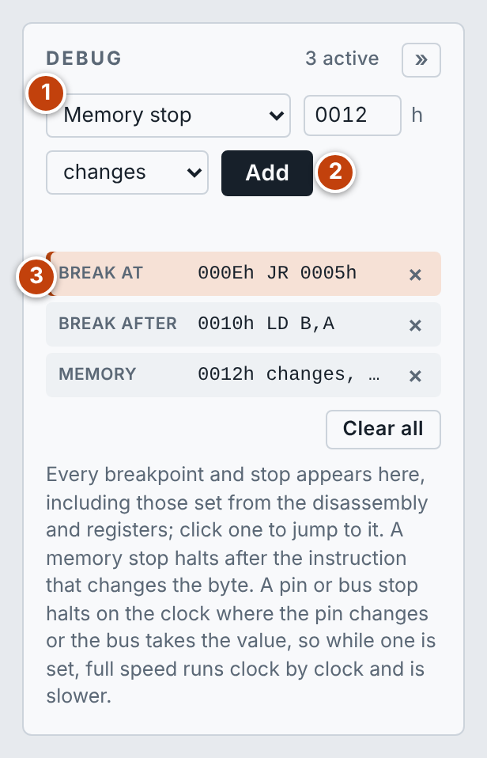
- Kind of debug point: choose what to add; the fields beside it change to suit.
- Add: adds it to the list.
- The list: every breakpoint and stop, including those set from the disassembly and the registers. Click one to jump to it, or the × to remove it. Clear all removes everything. The one that halted the run is highlighted.
| Kind | Halts |
|---|---|
| Memory stop | After the instruction that changes the byte at an address, or changes it to a given value |
| Pin stop | On the clock where a pin changes, goes high or goes low |
| Address bus value | On the clock where the address bus takes the value |
| Data bus value | On the clock where the data bus takes the value |
| Break at address | Before the instruction at the address runs |
| Break after address | When the PC leaves the address |
While a pin or bus stop is set, full speed runs clock by clock so that it can check every T-state, which makes it slower.
Bus timing
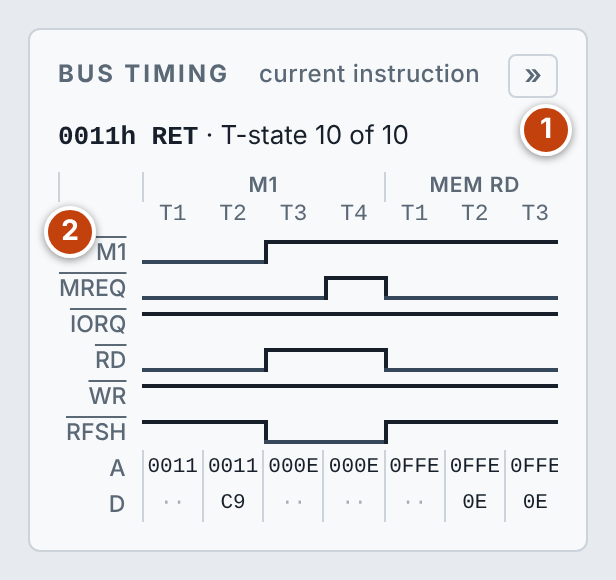
- Instruction: the address and mnemonic being drawn, and which of its T-states the CPU has reached.
- Waveforms: /M1, /MREQ, /IORQ, /RD, /WR and /RFSH for each T-state, grouped by machine cycle, with the address (A) and data (D) on the bus underneath.
System and I/O ports
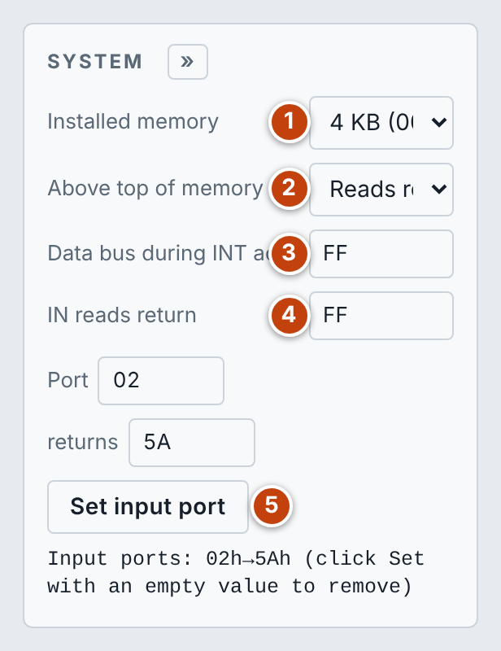
- Installed memory: 1, 2, 4, 8, 16, 32, 48 or 64 KB, starting at
0000h. - Above top of memory: either reads return
FFhand writes are ignored, or the addresses mirror the installed memory, as on a board with incomplete address decoding. - Data bus during INT ack: the byte the interrupting device puts on the bus: the instruction in mode 0 or the vector in mode 2.
- IN reads return: the value an
INinstruction gets from any port you have not set. - Set input port: enter a port number and the value it returns. Set it with an empty value to remove it.
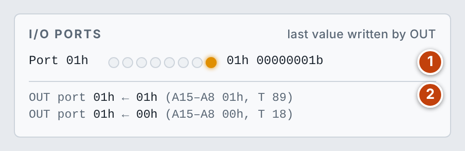
- Output latches: each port the program has written appears as eight LEDs (bit 7 on the left) with the value in hex and binary.
- Log: the most recent writes, with the upper half of the address bus (A15–A8) and the T-state count when each happened.
Hardware reference
Z80 Bench emulates the CPU alone: a Zilog Z80 in its 40-pin package, with memory and I/O ports attached straight to its buses. This section describes what it does at the pins.
Pins
| Pin | Signal | Direction | What it does |
|---|---|---|---|
| 30–40, 1–5 | A0–A15 | Output | Address bus. Carries the refresh address in the second half of an opcode fetch and the port address during I/O |
| 14, 15, 12, 8, 7, 9, 10, 13 | D0–D7 | Both | Data bus. Floats outside reads and writes |
| 6 | CLK | Input | Clock. One pulse is one T-state |
| 27 | /M1 | Output | Low during an opcode fetch and an interrupt acknowledge |
| 19 | /MREQ | Output | Low when the address bus holds a memory address |
| 20 | /IORQ | Output | Low during an I/O read or write; low together with /M1 to acknowledge an interrupt |
| 21 | /RD | Output | Low while the CPU reads from memory or a port |
| 22 | /WR | Output | Low while the data bus holds a byte to be written |
| 28 | /RFSH | Output | Low while the address bus holds the refresh address for dynamic RAM |
| 18 | /HALT | Output | Low after a HALT instruction, until an interrupt or reset |
| 24 | /WAIT | Input | Held low, it stretches the current machine cycle with wait states |
| 16 | /INT | Input | Maskable interrupt request, level-sensitive |
| 17 | /NMI | Input | Non-maskable interrupt, triggered by a falling edge |
| 26 | /RESET | Input | Low holds the CPU in reset |
| 25 | /BUSREQ | Input | Asks the CPU to float its buses |
| 23 | /BUSACK | Output | Low once the buses are floating |
| 11, 29 | +5V, GND | Power |
Machine cycles
Every instruction is made of machine cycles, and each machine cycle of T-states (clock periods). The Bus timing panel and the readout under the pinout name the cycle in progress.
| Cycle | Length | What happens |
|---|---|---|
| Opcode fetch (M1) | 4 T-states | /M1, /MREQ and /RD go low and the opcode is read in T1–T2. In T3–T4 the refresh address (I and R) is on the address bus with /RFSH and /MREQ low |
| Memory read | 3 T-states | /MREQ and /RD low; the byte is read at the end of T3 |
| Memory write | 3 T-states | /MREQ low, the byte on the data bus, then /WR low |
| I/O read or write | 4 T-states | /IORQ with /RD or /WR; the CPU always inserts one wait state of its own |
| Interrupt acknowledge | Longer M1 | /M1 and /IORQ low together; the device's byte is read from the data bus |
/WAIT is sampled at the proper point of each cycle, so holding it low adds wait states exactly where a slow memory or device would. /BUSREQ is honoured at the end of the current machine cycle.
Reset and interrupts
- Reset: the program counter, I and R go to zero, interrupts are disabled and the interrupt mode is 0. Execution starts at
0000hon the first clock after /RESET is released. - /NMI: a falling edge is remembered and taken at the end of the current instruction; the CPU calls
0066h. - /INT: taken at the end of an instruction while the pin is low and interrupts are enabled (IFF1 set). An
EItakes effect after the instruction that follows it. - Mode 0: the CPU executes the instruction supplied on the data bus. The bench accepts an
RSTopcode here; the defaultFFhisRST 38h. - Mode 1: the CPU calls
0038h. - Mode 2: the byte on the data bus is the low half and the I register the high half of the address of a table entry, which holds the address of the routine.
Memory and I/O model
- Memory: one block from
0000hto the installed size, all of it writable. ROM and RAM are not distinguished, so a program can overwrite itself. - Above the installed memory: open bus (reads
FFh) or mirrored, as set in the System panel. - Output ports: every port is a latch that remembers the last byte written. The full 16-bit address is on the bus during I/O, and the log shows its upper half.
- Input ports: each port returns the value you set for it, or the default.
The machines built on Z80 Bench replace this simple model with the real memory map and peripherals of each computer: see the emulators.
Verification and limits
- Instructions: all 67 groups of the zexdoc exerciser pass, so the documented flags are correct for every instruction.
- Timing: T-state counts match the Zilog datasheet for the instructions and interrupt responses tested.
- Assembler: all 1,136 instruction forms assemble to the expected bytes.
Known limits:
- During clock stepping, registers and memory update together at the end of each instruction, not partway through it. The pins are exact on every T-state.
- In mode 0 the interrupting device can only supply an
RSTopcode. - The undocumented flag bits 3 and 5 are approximate for
BIT n,(HL)and the block I/O instructions.